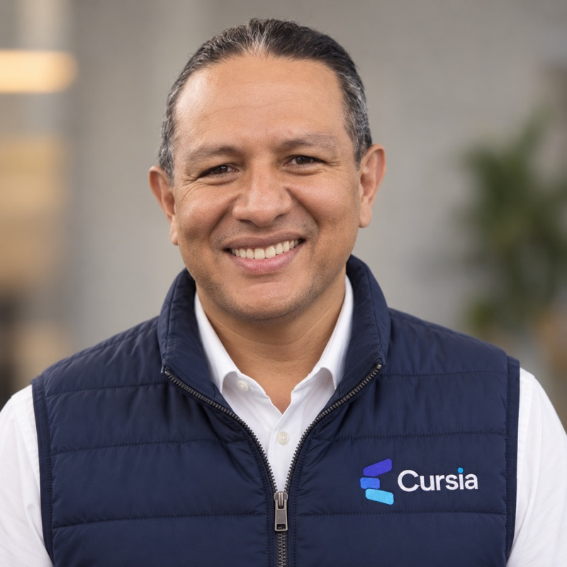

Colombia primero
Empezamos con instituciones colombianas — es donde tenemos la experiencia y los casos reales que respaldan cada propuesta.
Cursia transforma programas académicos en cursos digitales completos — con estructura pedagógica, video, actividades interactivas y evaluaciones, listos para Moodle. No es un servicio automatizado: es el trabajo de un equipo pequeño, el mismo que conoces a continuación.
Sin agencias externas ni outsourcing genérico: el mismo equipo que diseña la estrategia es el que construye cada curso, de principio a fin.
Lidera la parte técnica de Cursia: la arquitectura detrás de cada curso digital, la automatización que acelera la producción y la forma en que la inteligencia artificial se integra al diseño instruccional, sin reemplazar el criterio humano. Viene del desarrollo de software y plataformas educativas — esa experiencia es la que permite que un curso no solo se vea bien, sino que funcione técnicamente desde el primer día en Moodle.
Convierte la visión en tecnología.

Lidera la relación de Cursia con las instituciones: entender qué necesita cada una, traducirlo en una propuesta concreta y acompañar el proceso hasta que el primer curso está funcionando. Con experiencia en el sector educativo y en la construcción de relaciones institucionales de largo plazo, se asegura de que cada alianza tenga sentido estratégico, tanto para la institución como para el crecimiento de la compañía.
Convierte la tecnología en oportunidades.
Uno convierte la visión en tecnología. El otro, la tecnología en oportunidades. Ese equilibrio es el que sostiene cada curso que construimos.
Cursia arrancó resolviendo el mismo reto que hoy resuelve para otras instituciones: Inandina, en Villavicencio, necesitaba llevar su oferta de programas técnicos más allá de su sede física. De ahí salieron los primeros 23 programas digitalizados — y el modelo de producción que hoy usamos con cada institución nueva.
Detrás de Cursia no hay solo tecnología. Hay un equipo que estructura contenidos, produce recursos educativos, desarrolla actividades, revisa los cursos e implementa la experiencia final. La tecnología nos ayuda a trabajar más rápido y a mayor escala, pero cada proyecto tiene acompañamiento humano de principio a fin.
Nomaddi es un estudio de tecnología educativa con sede en Colombia. Cursia es su unidad especializada en transformación digital para instituciones — el mismo estándar de producción que ya usan Inandina y otras instituciones aliadas.
Empezamos con instituciones colombianas — es donde tenemos la experiencia y los casos reales que respaldan cada propuesta.
El modelo de producción no depende de la geografía. Ya trabajamos con instituciones fuera de Villavicencio y planeamos crecer por la región.
Cada curso —sin importar el plan contratado— sigue el mismo proceso de diseño instruccional, producción y control de calidad.
Agenda un diagnóstico gratuito de 30 minutos. Te mostramos, con tus propios programas, cuántos cursos digitales podrías tener funcionando este trimestre.